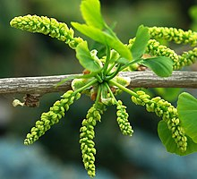
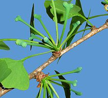
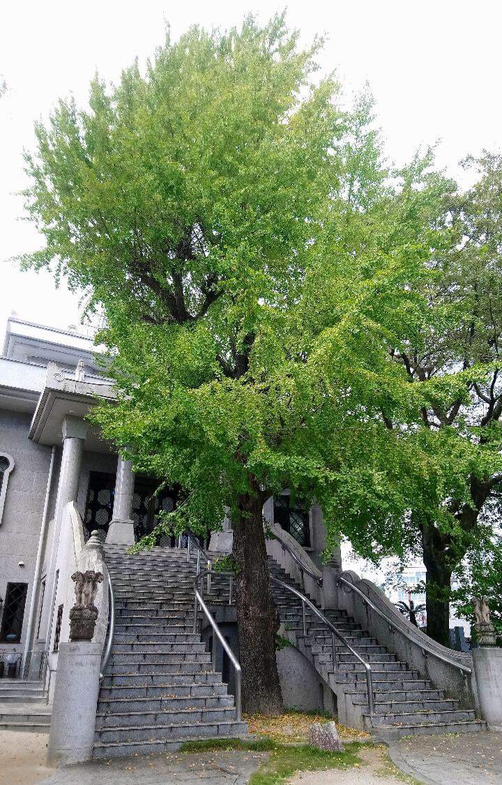

Árbol de hasta 40 m de altura, de porte piramidal. Es caducifolio, con una coloración amarillo dorada en otoño. Hojas pecioladas, con limbo en forma de abanico y nerviación dicotómica y abierta. En las ramas del año las hojas se disponen directamente sobre el macroblasto (y tienen 2 ó 4 profundos lóbulos), mientras que en porciones más antiguas las hojas se encuentran sobre característicos braquiblastos (= ramas cortas). Es un árbol dioico, con pies masculinos y femeninos diferentes. Los masculinos presentan inflorescencias amarillas agrupadas en amentos cilíndricos y en los femeninos, las flores se encuentran en grupos de 2 o 3.
Estas últimas, durante el otoño, producen una semilla blanda (falso fruto) que se suele confundir con una drupa. Al abrirla después de su fermentación, el olor desprendido es muy desagradable, por lo que el lugar de plantación de este árbol es de vital importancia si no se quiere respirar ese hedor. En estos últimos se producen las semillas, de hasta 2 cm, que recuerdan a una ciruela porque tienen la testa diferenciada en una parte externa carnosa -sarcotesta, de color anaranjado- y otra interna leñosa -esclerotesta-. La sarcotesta produce un desagradable olor a rancio.
Florece a comienzos de la primavera.
Es un auténtico fósil viviente, el único representante actual de una estirpe con una larga historia evolutiva (la clase Ginkgoopsida, cuyos fósiles se conocen desde el Pérmico). Por ello presenta características muy primitivas en su anatomía y reproducción (como los gametos masculinos flagelados, o espermatozoides).

Estructura masculina.

Estructura femenina.
Historia
Está considerado como la especie superior viva más antigua del planeta. Durante años a los científicos les resultó difícil clasificarlo, hasta que se decidió colocarlo en una división aparte (filo) Ginkgophyta, conformada por un solo orden, Ginkgoales, y una sola familia clasificada por Engler en 1897, Ginkgoaceae. La familia Ginkgoaceae está compuesta por dos géneros extintos, Ginkgoites y Baiera (conocidos por sus hojas fosilizadas), y uno vivo, Ginkgo, con una única especie: ginkgo biloba.
Se estima que nació hace 270 millones de años. Ello hace que ocupe un lugar excepcional en el árbol, evolutivo de la vida. Es el único representante sobreviviente de un grupo muy inusual de plantas no florecientes que apareció hace más de 270 millones de años. El ginkgo ha conservado además rasgos a lo largo de millones de años como las hojas en forma de abanico, que no se ven en ninguna otra especie de plantas.
Hiroshima
El 6 de agosto de 1945 caía sobre Hiroshima la primera bomba atómica usada como arma de guerra. Sus efectos fueron devastadores. Murieron al instante 140.000 personas. Esta cifra fue aumentando en los días siguientes hasta llegar a alrededor de 350.000. Los edificios quedaron arrasados. Sin embargo, a apenas un kilómetro del epicentro de la explosión sobrevivía un árbol, el ginkgo biloba. Un año después brotaba de nuevo como si nada hubiese pasado.
Cómo sobrevivió a la radiación y a las temperaturas extremas que se registraron en Hiroshima es un misterio. No fue el único ejemplar que sobrevivió a la bomba atómica. Otros situados a algo más de distancia del epicentro también lo lograron. De hecho, aún hoy se mantiene vivo. En su pie hay una inscripción en la que puede leerse: «No más Hiroshima».

Árbol sobreviviente a la bomba atómica de Hiroshima.
Usos
Las hojas del ginkgo biloba se han utilizado desde hace más de 2.000 años frente a diversas dolencias, relacionadas sobre todo con el cerebro y el flujo sanguíneo, especialmente del sistema nervioso central.
Sus hojas tienen tres tipos de compuestos de interés medicinal: flavonides (que son antioxidantes), ginkgólidos y bilobálidos. Los dos últimos pertenecen al vasto grupo de compuestos orgánicos denominados terpenos.
El ginkgo biloba se puede encontrar en comprimidos, en extractos líquidos o en geles. Sus hojas desecadas se utilizan para hacer infusiones, que generalmente acompañan al té y a otras hojas. Se desaconseja consumir sus semillas por su potencial tóxico.
Tratamientos para los que se ha utilizado tradicionalmente (aunque no existe suficiente aval médico y científico).
Ansiedad.
Funciones mentales:
Mejora de la memoria.
Velocidad de pensamiento.
Atención.
Problemas de visión en personas con diabetes.
Síndrome premenstrual.
Esquizofrenia.
Disfunción sexual.
Astenia primaveral.
Asma.
Dependencia de la cocaína.
Hipertensión arterial.
Esclerosis múltiple.
Enfermedades cardiacas.
Dislexia.
Fibromaliga.
Cánceres:
Colorrectal.
Estómago.
Ovario.
Páncreas
Hemorroides.
Migrañas.
Síndrome de Raynaud.
Conjuntivitis.
Accidentes cerebrovasculares.
Colesterol alto.
Arterioesclerosis.
Tratamientos para los que está aprobado como medicamento.